Iwanuma
Iwanuma · Miyagi
Iwanuma
Highlighted on the Miyagi map.
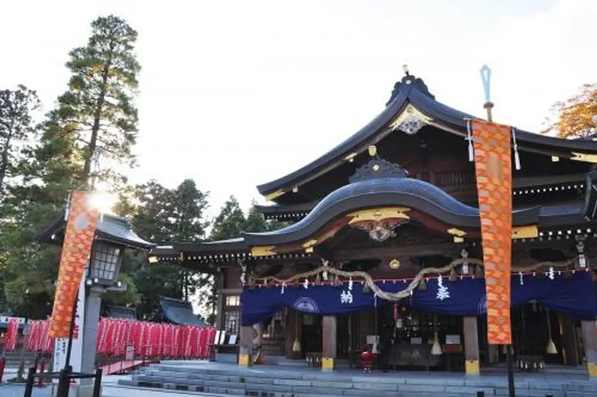
Stay
ホテルテトラリゾート仙台岩沼
Hoterutetorarizooto Sendai Iwanuma
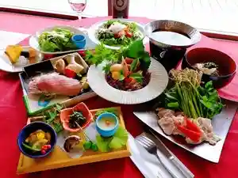
Dining
noodle shop arakawa
noodle shop arakawa
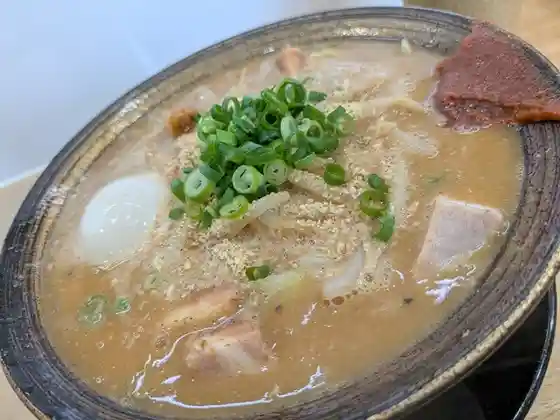
自家製麺中華そば 八縁
Jikasei Men Chuuka Soba Hachi Heri
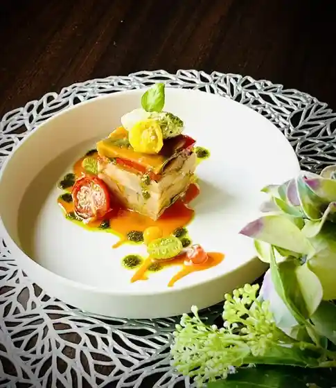
カシュ カシュ
Kashu Kashu
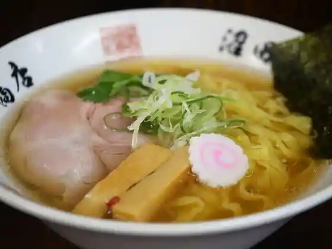
沼田商店 麺組
Numata Shouten Men Kumi
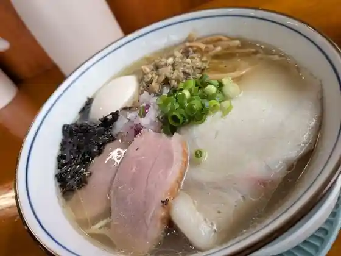
noodle shop nanairo
noodle shop nanairo
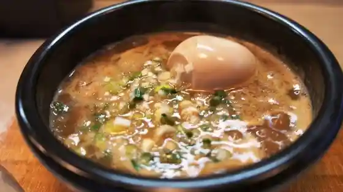
つけ麺 うまづら
Tsuke Men Umazura
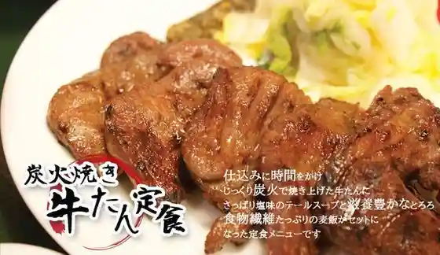
たんとろ
Tantoro
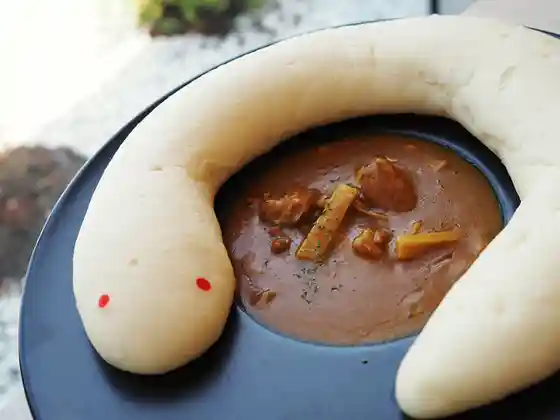
金蛇水神社参道・休憩処 サンドウ テラス
金蛇水神社参道・休憩処 サンドウ テラス
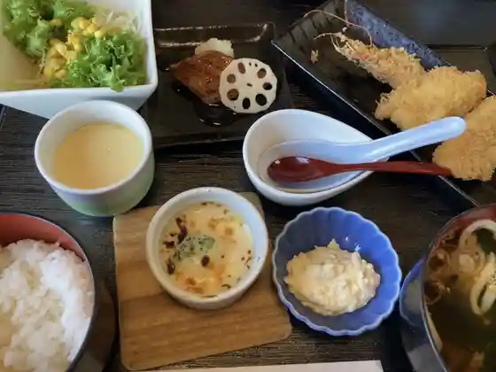
ひばり
Hibari
魔女のたまご
Majo Notamago
萬乃助 岩沼店
Man No Jo Iwanuma Mise
SOBADOKORO YUU
SOBADOKORO YUU
ジャンプラーメン
Janpuraamen
ブーランジュリー ベック
Buuranjurii Bekku
まこと寿し
Makoto Hisashi Shi
竹駒の杜 CAFÉ 一粒万倍
Takekoma No Mori Caf E Hitotsubu Manbai
かつ吉
Katsu Kichi
pizzeria e trattoria elianto
pizzeria e trattoria elianto
食事処 おおとも
Shokuji Tokoro Ootomo
居酒屋 亀たろ
Izakaya Kame Taro
麺屋小十郎
Men Ya Kojuurou
奥州製麺所
Oushuu Seimen Tokoro
310 IWANUMA-BASE
310 IWANUMA-BASE
そば処おさだ
Soba Tokoro Osada
つるや
Tsuruya
おくに寿し
Okuni Hisashi Shi
中国飯店味一番
Chuugoku Hanten Aji Ichiban
PATISSERIE HINICHIJOU
PATISSERIE HINICHIJOU
BAOBAB
BAOBAB
フーズガーデン玉浦 食彩館
Fuuzugaaden Gyokuho Shokusai Kan
よつばベーカリー 岩沼本店
Yotsuba Beekarii Iwanuma Honten
パン工房 OLIMBA
OLIMBA
とんかつ二木
Tonkatsu Futatsugi
麺屋ぎぎ
Men Ya Gigi
油そば 零
Abura Soba Rei
炭火焼きとり とりはな
Sumibi Yaki Tori Torihana
沖あがり食堂 ばんや
Oki Agari Shokudo Banya
coil
coil
日月潭
Nichigetsu Tan
味一番 玉浦店
Aji Ichiban Gyokuho Mise
レストランパルパル
Resutoranparuparu
MiZuHa
MiZuHa
食事の店 園
Shokuji No Mise Sono
JOCA東北 やぶ亀
JOCA
玉浦・海鮮丼 魚がしら
玉浦・海鮮丼 魚がしら
小料理 すずRe:
Koryouri Suzu Re:
利久
Toshihisa
おおひと
Oohito
卵匠家 吟
Tamago Takumi Ie Gin
そば処千歳
Soba Tokoro Chitose
食事処 味里
Shokuji Tokoro Aji Sato
大成
Taisei
仙臺油そば はてなプラス 岩沼店
Sendai Abura Soba Hatena Purasu Iwanuma Mise
母ちゃんごはん
Kaachan Gohan
IKoMiKi
IKoMiKi
ORION BAGEL
ORION BAGEL
かわむら
Kawamura
麺処 よしだ家
Men Tokoro Yoshida Ie
焼鳥 笑多屋 岩沼店
Yakitori Warai Taya Iwanuma Mise
カフェ・ダイニング＆バー バルバ
カフェ・ダイニング&バー バルバ
いわぬま蓑寿司
Iwanuma Mino Sushi
エピックビュー
Epikkubyuu
焼肉トップ
Yakiniku Toppu
ビストロボンテン 岩沼駅前店
Bisutorobonten Iwanuma Ekimae Mise
cafe おやこの木
cafe
Irodori.Kitchen
Irodori.Kitchen
鬼がらし 岩沼店
Oni Garashi Iwanuma Mise
丸徳そば
Maru Toku Soba
油そばうまづら
Abura Sobaumazura
ドゥ・ラパン
ドゥ・ラパン
安田商店
Yasuda Shouten
麺酒場 高ちゃん
Men Sakaba Taka Chan
ココリコ
Kokoriko
カフェ Dao Tao
Dao Tao
気になるアイスの店
Kini Naru Aisu No Mise
ビストロ・サンテ
ビストロ・サンテ
いなりカフェ
Inari Kafe
三宝亭 岩沼店
Sanpou Tei Iwanuma Mise
ロイヤルインドレストラン 岩沼店
Roiyaruindoresutoran Iwanuma Mise
ビッグボーイ 岩沼店
Biggubooi Iwanuma Mise
丸田魚店
Maruta Sakana Mise
食菜館ひまわり
Shoku Saikan Himawari
礼門
Rei Mon
NISHIKIYA KITCHEN & CAFE
NISHIKIYA KITCHEN & CAFE
カフェ ネッラズーロ
Kafe Nerrazuuro
つつみ庵 岩沼店
Tsutsumi Iori Iwanuma Mise
cafe Chocott
cafe Chocott
くるまやラーメン 岩沼バイパス店
Kurumaya Raamen Iwanuma Baipasu Mise
かっぱ寿司 岩沼店
Kappa Sushi Iwanuma Mise
かつや 宮城岩沼店
Katsuya Miyagi Iwanuma Mise
手造りとうふ 布田フーズ
Te Tsukuri Toufu Fuda Fuuzu
香蘭 バイパス店
Kouran Baipasu Mise
国井米穀店
Kunii Beikoku Mise
斎源商店
Sai Gen Shouten
週末びっくり市 岩沼店
Shuumatsu Bikkuri Shi Iwanuma Mise
韓一館
Kan'ichi Kan
三品屋
Mishina Ya
かめや菓子舗
Kameya Kashi Ho
居酒屋 ニライカナイ
Izakaya Niraikanai
あまのじゃく
Amanojaku
ひまわりのたね
Himawarinotane
ヨークベニマル 岩沼西店
Yookubenimaru Iwanuma Nishi Mise
フレスコキクチ 岩沼西店
Furesukokikuchi Iwanuma Nishi Mise
駅中スナック 岩沼店
Ekinaka Sunakku Iwanuma Mise
お好みハウス たかはし
O Konomi Hausu Takahashi
夢彩café
Yume Sai Caf E
幸楽苑 岩沼店
Kouraku En Iwanuma Mise
吉野家 ４号線岩沼店
Yoshinoya 4 Gousen Iwanuma Mise
ラーメン 大志軒 岩沼店
Raamen Taishi Ken Iwanuma Mise
和風レストランまるまつ 岩沼店
Wafuu Resutoran Marumatsu Iwanuma Mise
文明堂 仙台直売店
Bunmeidou Sendai Chokubai Mise
平禄寿司 宮城岩沼店
Taira Roku Sushi Miyagi Iwanuma Mise
ポワソン
Powason
おきらく割烹 東山
Okiraku Kappou Higashiyama
KITCHEN つぁいと
KITCHEN
カラカラ
Karakara
のれん酒房
Noren Sake Bou
スターバックス 岩沼店
Sutaabakkusu Iwanuma Mise
ル・コントワール ロメオ
ル・コントワール ロメオ
マクドナルド 岩沼西ヨークベニマル店
Makudonarudo Iwanuma Nishi Yookubenimaru Mise
鰻の成瀬 宮城岩沼店
Unagi No Naruse Miyagi Iwanuma Mise
食事処 福住
Shokuji Tokoro Fukuzumi
菊寿司
Kiku Sushi
ＤＡＮ蘭
D A N Ran
だいこんの花
Daikonno Hana
藤セ
Fuji Se
宝島
Takara Shima
和風スナック てる美ちゃん
Wafuu Sunakku Teru Bi Chan
岩沼みんなの家 by infocom
by infocom
おとなの食堂 MAY
Otonano Shokudo May
山海厨房 雅
Sankai Chuubou Masa
たち花
Tachi Hana
ゆらり酒家 うさぎ
Yurari Shuka Usagi
すき家 岩沼中央店
Suki Ie Iwanuma Chuuou Mise
ほっともっと 岩沼武隈店
Hottomotto Iwanuma Takekuma Mise
蔵人
Kurabito
牛角 岩沼店
Gyuukaku Iwanuma Mise
シャトレーゼ 岩沼店
Shatoreeze Iwanuma Mise
だんまや水産 岩沼駅前店
Danmaya Suisan Iwanuma Ekimae Mise
ナポリの窯 岩沼店
Napori No Kama Iwanuma Mise
相傳商店
Souden Shouten
モンペリエ ヨークベニマル岩沼店
Monperie Yookubenimaru Iwanuma Mise
不二家 ヨークベニマル岩沼西店
Fujiya Yookubenimaru Iwanuma Nishi Mise
セブンイレブン 岩沼二木2丁目店
Sebun'irebun Iwanuma Futatsugi 2 Choume Mise
琉の花
Ryuu No Hana
幸楽苑のからあげ家 岩沼店
Kouraku En Nokaraage Ie Iwanuma Mise
和食屋はんざわ
Washoku Ya Hanzawa
モンペリエ ヨークベニマル岩沼西店
Monperie Yookubenimaru Iwanuma Nishi Mise
たつみ
Tatsumi
仙台ホルモン・焼肉 ときわ亭 岩沼店
仙台ホルモン・焼肉 ときわ亭 岩沼店
三浦栄進堂
Miura Eishin Dou
まぜそば 凡芭凡芭
Mazesoba Bon Ha Bon Ha
LAWSON 岩沼松ケ丘店
LAWSON
ごちそう市場
Gochisou Shijou
大衆居酒屋オーパ！
Taishuu Izakaya Oopa !
セブンイレブン 岩沼小川店
Sebun'irebun Iwanuma Ogawa Mise
セブンイレブン 岩沼桜4丁目店
Sebun'irebun Iwanuma Sakura 4 Choume Mise
ファミリーマート 岩沼たけくま店
Famiriimaato Iwanuma Takekuma Mise
パン工房 アンジュール みやぎ生協セラビ岩沼店
Pan Koubou Anjuuru Miyagi Seikyou Serabi Iwanuma Mise
ホテル原田
Hotel Harada
岩沼ホルモン おみつ
Iwanuma Horumon Omitsu
自家製麺 ラーメンが止マラナイ
Jikasei Men Raamen Ga Shi Maranai
八百勝商店
Happyaku Katsuaki Mise
にぎわい市場
Nigiwai Shijou
NewDaysミニ 岩沼店
NewDays
洋食工房モリスケ
Youshoku Koubou Morisuke
Sucre
Sucre
セブンイレブン 岩沼たけくま店
Sebun'irebun Iwanuma Takekuma Mise
LAWSON 岩沼下野郷店
LAWSON
桃
Momo
馬上かまぼこ店
Bajou Kamaboko Mise
食品館イトー 岩沼店
Shokuhinkan Itoo Iwanuma Mise
フレスコキクチ 岩沼東店
Furesukokikuchi Iwanuma Higashi Mise
酒場 わたる
Sakaba Wataru
森景商店
Morikei Shouten
たけこま市場
Takekoma Shijou
遊食処九重
Yuu Shoku Tokoro Kokonoe
バス停
Basu Tei
すし駒
Sushi Koma
とりせん
Torisen
ひなた
Hinata
チップトップ
Chipputoppu
かつこ
Katsuko
居心地屋 大和
Igokochi Ya Yamato
ホルモン・焼肉 玄
ホルモン・焼肉 玄
ファミリーマート 岩沼恵み野二丁目店
Famiriimaato Iwanuma Megumi No Nichoume Mise
中華酒場 月灯
Chuuka Sakaba Gatsu Tomoshibi
ふじ家
Fuji Ie
ホルモンなごみ
Horumon Nagomi
ファミリーマート 岩沼桑原店
Famiriimaato Iwanuma Kuwahara Mise
すこやか食堂
Sukoyaka Shokudo
居酒屋 つどい
Izakaya Tsudoi
宝来
Hourai
CLUBHOUSE Lio Lio
CLUBHOUSE Lio Lio
カワチ薬品 岩沼店
Kawachi Yakuhin Iwanuma Mise
あきあかね
Akiakane
ストロベリーコーンズ 岩沼店
Sutoroberiikoonzu Iwanuma Mise
岩秀
Iwa Shuu
Kikka
Kikka
居酒屋 おゆき
Izakaya Oyuki
COOP MIYAGI 岩沼店
COOP MIYAGI
Montana Resort
Montana Resort
Restaurant Cache Cache
Restaurant Cache Cache
Mengumi
Mengumi
Restaurant Pal Pal
Restaurant Pal Pal
Homemade Chinese Noodles Yaen
Homemade Chinese Noodles Yaen
Bistro Serukuru
Bistro Serukuru
Arakawa Noodle Shop
Arakawa Noodle Shop
Mirukiueiiwanumaten
Mirukiueiiwanumaten
Deux Lapins
Deux Lapins
Soba Shop Osada
Soba Shop Osada
Iwahide
Iwahide
Hotel Harada
Hotel Harada
Iorizen Iwanuma
Iorizen Iwanuma
Kobo Suijin Soba
Kobo Suijin Soba
Sakumaya Confectionery
Sakumaya Confectionery
McDonald s Iwanumanishi York Benimaru
McDonald s Iwanumanishi York Benimaru
Shoko Shubo
Shoko Shubo
Soba Chitose
Soba Chitose
Royal India Restaurant Iwanuma
Royal India Restaurant Iwanuma
Dammaya Suisan Iwanuma Ekimae
Dammaya Suisan Iwanuma Ekimae
Gyukaku Iwanuma
Gyukaku Iwanuma
Daiyu Ryoriya
Daiyu Ryoriya
Wafu Restaurant Marumatsu Iwanuma
Wafu Restaurant Marumatsu Iwanuma
Kojuro
Kojuro
Taraku Chaya
Taraku Chaya
Zero
Zero
Abeya Dining
Abeya Dining
Nomase
Nomase
Heirokuzushi Iwanuma
Heirokuzushi Iwanuma
Kushidokoro Toriton
Kushidokoro Toriton
Jump Ramen
Jump Ramen
Yakitoritakachan
Yakitoritakachan
Tamaryu Hanten
Tamaryu Hanten
Curry House Sono
Curry House Sono
Koran Bypass
Koran Bypass
Shisen Ryori Soka
Shisen Ryori Soka
Chinese Restaurant Aji Ichiban
Chinese Restaurant Aji Ichiban
Oishiiichibatanpopo
Oishiiichibatanpopo
Shabu Shabu Gosen Iwanuma Honten
Shabu Shabu Gosen Iwanuma Honten
Snak and Cafe Yomoyama
Snak and Cafe Yomoyama
Jerbu Iwanuma
Jerbu Iwanuma
Ajiyoshi
Ajiyoshi
Cafe Sweets Natural
Cafe Sweets Natural
Yawatahanten
Yawatahanten
Stray Cat Wine
Stray Cat Wine
Tokarin
Tokarin
Peacock Iwanuma
Peacock Iwanuma
Art Coffee Salon Epic Vieworiental
Art Coffee Salon Epic Vieworiental
Dan Orchid
Dan Orchid
Shubo Noren
Shubo Noren
Tsuaito Kitchen
Tsuaito Kitchen
Tomi Zushi
Tomi Zushi
Kacho
Kacho
Yakitori Daikichi Iwanuma
Yakitori Daikichi Iwanuma
Chinese Restaurant Hanatenshin
Chinese Restaurant Hanatenshin
Taiwan Cuisine Higatsutan
Taiwan Cuisine Higatsutan
Dining Akira
Dining Akira
Karaoke Studio Skarinto
Karaoke Studio Skarinto
Party Karaoke I S
Party Karaoke I S
Eiraiken
Eiraiken
Snack Remy
Snack Remy
Dining Misato
Dining Misato
Sakura No Kobako
Sakura No Kobako
Homemade Prepared Foods Akane
Homemade Prepared Foods Akane
Wain to Chizu no Mise Le Comptoir R
Wain to Chizu no Mise Le Comptoir R
Miyagino Shokudo
Miyagino Shokudo
Manpuku Dining Miyashi
Manpuku Dining Miyashi
Taste Best Ball Uramise
Taste Best Ball Uramise
Horai
Horai
Sawauchi Kamoryori
Sawauchi Kamoryori
Banrai
Banrai
Aji Kiko Aizen
Aji Kiko Aizen
Takano Restaurant
Takano Restaurant
Hirai Ya
Hirai Ya
Kiku Zushi
Kiku Zushi
Matsuya Shokudo
Matsuya Shokudo
Yushokudokoro Kokonoe
Yushokudokoro Kokonoe
Meal Processing Otomo
Meal Processing Otomo
Seasonal Shunsai Osho
Seasonal Shunsai Osho
Wakuwaku Bento Iwanuma
Wakuwaku Bento Iwanuma
Foods Garden Tamaura Shokusaikan
Foods Garden Tamaura Shokusaikan
Barba
Barba
Hanamaro
Hanamaro
Hormone Tavern Hishimekiya
Hormone Tavern Hishimekiya
Uruma
Uruma
Farine Serabi Iwanuma
Farine Serabi Iwanuma
Sumibiyaki Giichi
Sumibiyaki Giichi
Ajiro
Ajiro
Kitchen Saito
Kitchen Saito
Konohata York Benimaru Iwanuma
Konohata York Benimaru Iwanuma
Brian S2
Brian S2
China Snack Hanamizuki
China Snack Hanamizuki
Snack Duckweed
Snack Duckweed
Snack Nagisa
Snack Nagisa
Cafe Snacks Kei
Cafe Snacks Kei
Hishiya
Hishiya
Snack Begin
Snack Begin
Sentence Chan
Sentence Chan
Majarain
Majarain
Japanese Style Snacks Terumichan
Japanese Style Snacks Terumichan
Revival
Revival
Sengan
Sengan
Poireau
Poireau
Hassan
Hassan
Ajidokoro Umisen Yamasen
Ajidokoro Umisen Yamasen
Maria s Paradise
Maria s Paradise
Aji Dokoro Take
Aji Dokoro Take
Fuwari
Fuwari
Tsudoi
Tsudoi
Bus Tei
Bus Tei
La Porte
La Porte
Izakaya Ayaya
Izakaya Ayaya
Shonaihan
Shonaihan
Sampotei Iwanuma
Sampotei Iwanuma
Bistro Bonten Iwanuma
Bistro Bonten Iwanuma
Tiptop
Tiptop
Shop
Sando Terrace Kinjasui Shop
Shrine-approach rest spot with light bites and local goods
Sights
miiina Children's Play Base
Large indoor-outdoor children's play and exchange base
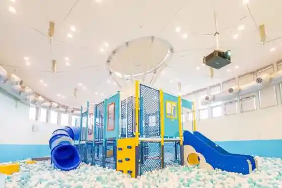
Takekoma Shrine
Historic Inari shrine famous for the Hatsuuma festival
Sando Terrace Kinjasui
Rest terrace on the Kinjasui Shrine approach
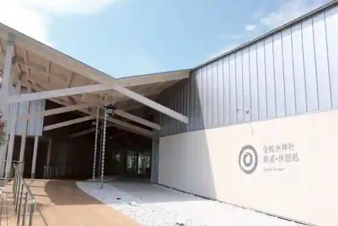
Millennium Hope Hills
Coastal memorial hills and walkways built after 2011
Greenpia Iwanuma
Hilltop resort park with lodging, baths, and recreation
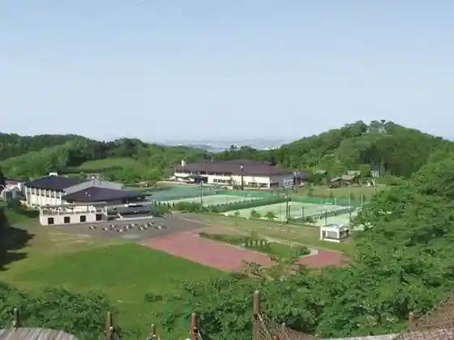
Kinjasui Shrine
Shrine known for peonies and a long approach path
Iwanuma Sheep Village
Family sheep farm and petting stop
Takekoma Shrine Hatsuuma Festival
Major early-spring Inari festival at Takekoma Shrine
Futagi Pine
Named historic pine tree in central Iwanuma
Kinjasui Shrine Peonies
Seasonal peony displays in the Kinjasui shrine grounds